1 Introducción
Hevelius, es un sistema de control de telescopios, el cual tiene como característica principal el carácter genérico.
En la actualidad cada software para controlar telescopios es de carácter individual, vale decir, existe una determinada interfaz y sistema de control específico para cada distinto telescopio, transformando así la tarea de los operadores de éstos un trabajo tedioso, puesto que deben aprender a utilizar distintas interfaces y sistemas para cada uno de los instrumentos.
Esta aplicación, como se mencionó anteriormente, pretende eliminar esta complicación y hacer más sencilla la tarea de los operadores, esto mediante una interfaz genérica que permita ser aplicable a cada telescopio sin importar el tipo de éste, con lo cual los operadores ya no tendrán que aprender dos o más tipos de interfaces y sistemas, si no que bastará sólo con una.
Este manual explica como es el funcionamiento de Hevelius, sus componentes, como manejarlo, instalarlo, términos relacionados con el tema para que cualquier persona que no sea docta con el tema, pueda manejar Hevelius sin ningún problema.
2 Glosario
- ACS
- ALMA COMMON SOFTWARE, Framework de aplicaciones y modelo de programación común.
- Altitude
- Se mide desde el horizonte hasta la posición del astro, siguiendo una línea imaginaria que lo conduzca hasta el Zenith.
- Azimuth
- Se mide siguiendo la línea del horizonte en sentido horario, desde el punto cardinal Sur, hasta el lugar situado debajo del astro que se desea observar.
- Catálogo de Estrellas
- Documento o archivo en el cual se encuentra distinto tipo de información como ubicación y luminosidad de estrellas, galaxias, planetas, nebulosas, etc.
- Coordenadas Ecuatoriales
- Tipo de coordenadas celestes que determinan la posición de un objeto en la esfera celeste respecto al ecuador celeste y al equinoccio vernal. Se denominan Declinación (DEC) y Ascensión Recta (RA) y son equivalentes a la latitud y longitud geográficas
- Coordenadas Horizontales
- Sistema de coordenadas celestes referidas al horizonte del observador y a su vertical. Posee dos tipos de coordenadas Azimuth y Altitude.
- Declination
- Angulo que forman el ecuador celeste y el objeto. Para objetos situados entre el ecuador y el polo norte, la declinación es positiva y, en caso contrario, negativa. Equivale a la latitud geográfica.
- Epoch
- Fecha asociada a una posición en coordenadas ecuatoriales, la cual es valida por períodos pequeños de tiempo.
- Hevelius
- Apellido en español de astrónomo polaco.
- Offset
- Corrección que se hace a las coordenadas horizontales cuando se quiere ''precisar`` la observación
- Park
- Posición Pre-Establecida, en este software la ubicación es en las coordenadas horizontales (0,0).
- Pointing Manual
- Capacidad de reconocer si el objeto, que se está observando teóricamente, realmente está siendo apuntado.
- Presetting
- Capacidad de moverse desde cierta ubicación a otra de manera segura.
- Right Ascention
- Ángulo medido sobre el ecuador celeste, abarcado entre el Punto Aries (equinoccio vernal) y el círculo horario o meridiano que pasa por el objeto observado. Equivale a la longitud geográfica. Su sentido positivo es el directo o antihorario, el mismo de la rotación terrestre vista desde el polo Norte. Sus unidades son las angulares, expresadas en horas: 24 horas se corresponden a 360º, 1 hora a 15º, etcétera.
- Telescopio
- Herramienta o instrumento que permite ver objetos lejanos. Es la herramienta fundamental de la astronomía, y cada desarrollo o perfeccionamiento del telescopio ha sido seguido de avances en nuestra compresión del Universo.
- TCS
- Sigla en inglés de Sistema de Control de Telescopios
- Tiempo Sideral
- Tiempo medido por el movimiento diurno aparente del equinoccio vernal, que se aproxima, aunque sin ser idéntico, al movimiento de las estrellas. Se diferencia en la precesión del equinoccio vernal con respecto a las estrellas.
- Tracking
- Capacidad del telescopio de seguir cierto objeto en el cielo, contrarrestando el movimiento de la Tierra.
- Zenith
- Punto exacto en que la vertical de un observador u observadora corta la esfera celeste, por encima del horizonte. Es técnicamente justo lo que tenemos encima de nuestra cabeza, en un ángulo de 90°. El punto diametralmente opuesto se llama Nadir.
3 Requerimientos de sistemas
3.1 Requerimientos de software
Para la instalación de Hevelius es necesario contar con los siguientes componentes previamente instalados:
Sistema Operativo Linux
Software ACS 6.0
Java versión 1.5.0 04 2
Jogl-1 0 0-linux-i586.
3.2 Requerimientos de Hardware
Para el funcionamiento de Hevelius es necesario un computador con acceso a Internet o a través de una máquina virtual.
4 Conectar un Telescopio
4.1 Conexión Telescopio
Para la conexión del telescopio, todo lo que se debe hacer es conectar su telescopio al computador que servirá de contenedor y al cual todos los demás equipos se conectarán para poder comenzar con el manejo de este.
6 Componente de Interfaz de Usuario
6.1 Hevelius
En su fase inicial, antes de realizar el ingreso ya sea a través de Login o Stara tcs. En este estado no se permite hacer ningún tipo de movimiento.
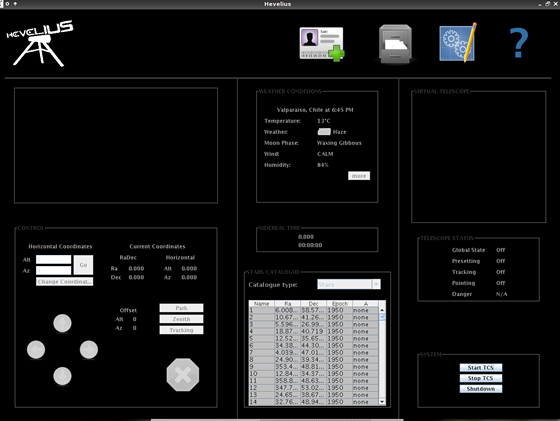
6.2 Menú
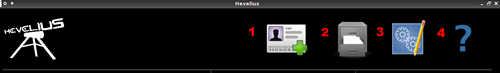
Login
Para poder tener un control de aquellos que manejan el equipo conectado al software, en esta parte se registra en el programa para posterior uso del historial. La ubicación del login es la siguiente:
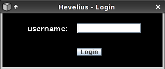
Historial
Para tener un registro de las observaciones y estudios realizados durante su sesión, solo debe hacer clic en esta sección y seleccionar su login como se muestran en las siguientes imágenes:
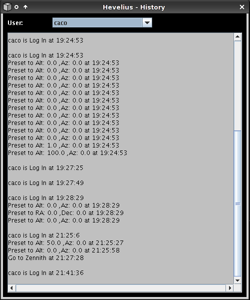
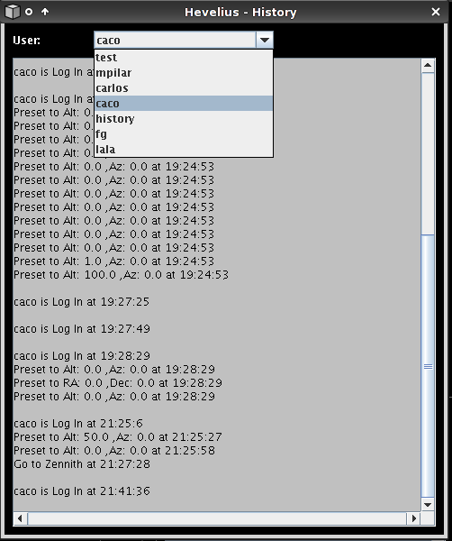
Configuración
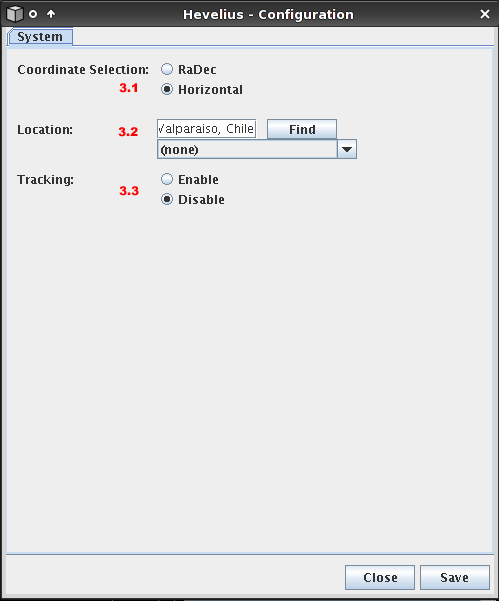
En esta parte podemos decidir como vamos a trabajar:
Tipo de Coordenada: Aquí podemos seleccionar que tipo de coordenada en la cual queremos trabajar.
Ubicación: Como se muestra en la siguiente foto, pones la ubicación en la cual se encuentra el telescopio y presionamos ''find``, y seleccionamos la ciudad y posteriormente ''save``.
Tracking: Podemos activar para que comience dicha función.
Help
Sección donde se puede encontrar ayuda sobre el software.
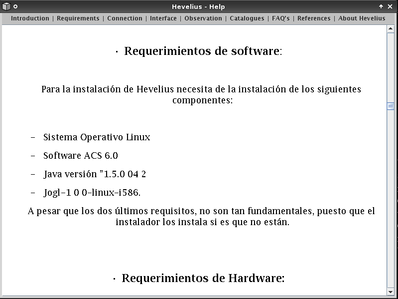
6.3 Condiciones del Clima
Para las observaciones es muy importante las condiciones en donde se encuentra el telescopio, es por ello que se muestra una sección en la cual esta la información más relevante. A demás, presionando en ''more`` podemos acceder a información más detallada como se muestra en las siguientes figuras:
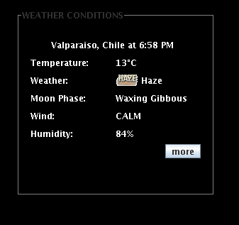
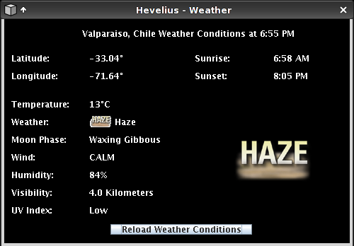
6.4 Tiempo Sideral
Dato importante para los astrónomos. Para ver su significado revisar el glosario.
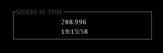
6.5 Catálogo de Estrellas
En esta sección, haciendo un clic en la estrella que queremos observar, se carga automáticamente sus coordenadas y se mueve a dicha ubicación. Tal y como se observa en la imagen, vemos que posee el nombre, su ubicación en coordenadas ecuatoriales (ver glosario), el epoch (ver glosario) y la luminosidad.
Para saber que es un catalogo de estrella ver el glosario.
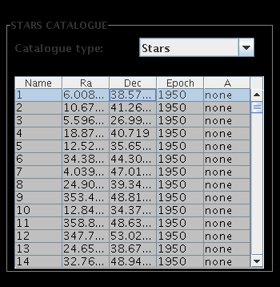
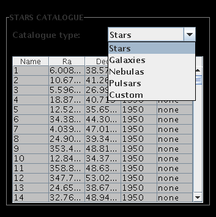
6.6 Control del Telescopio
En esta sección se encuentran los distintos componentes para el manejo del telescopio.
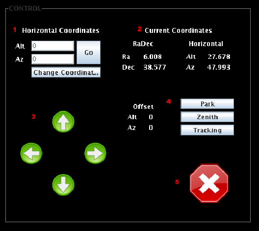
Indicación de las coordenadas: Aquí se dan las coordenadas a las cual queremos dirigir el telescopio en el tipo de coordenadas indicado en la configuración. Para ir a la posición deseada, solo debemos presionar ''GO``.
Coordenadas Actuales: En esta parte se muestra las coordenadas que actualmente estamos utilizando y su equivalencia en el otro tipo de coordenadas que posee el programa.
Control: En esta parte podemos ver el control de offset (ver glosario) en donde a través de las flechas podemos mover en altitud (arriba y hacia abajo) y azimuth (izquierda o derecha) tan solo haciendo clic sobre ellas. Cada clic equivale a un grado.
Si es que se desea mover a Park, Zenith o activar el Tracking, tan solo se debe hacer un clic sobre ellos y se activaran dichas funciones. Para ver sus significados revisar el glosario.
Botón Stop: Si estamos en medio de una observación y nos dimos cuenta que nos hemos equivocado o esta moviéndose a un lugar peligroso, apretando este botón el telescopio se detiene automáticamente en la posición en que se encontraba en el momento en dicho instante.
6.7 Estados del Telescopio
En esta sección encontramos los datos referentes al estado del telescopio:
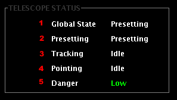
Global State: Nos indica si es que estamos conectado o no al telescopio.
Presetting: Nos dice si esta activado o no.
Tracking: Nos dice si esta activado o no
Pointting: Muestra el estado en el que se encuentra.
Danger: Nos indica que tan peligroso es la coordenada a la cual estamos apuntando. Esto esta basado por la luminosidad de la luna que se encuentra cerca del telescopio, teniendo tres niveles: bajo, moderado y alto.
6.8 Sistema
En esta sección se encuentra las conexiones.
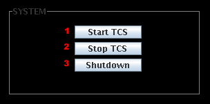
Start TCS: Al hacer clic en este botón se inicia la conexión con el framework ACS (ver glosario) necesario para el manejo del telescopio.
Stop TCS: Se detiene la conexión a ACS y no se puede seguir moviendo el telescopio
Shutdown: Se detiene la conexión a ACS y se sale del programa.
6.9 CCD
En esta sección se muestra la imagen de lo que esta observando el telescopio, la cual se va actualizando cada 5 segundos.
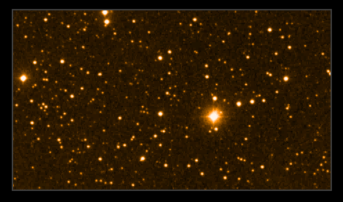
6.10 Telescopio Virtual
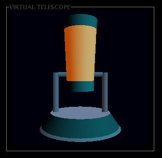
Telescopio virtual que simula la posición en la que se encuentra el telescopio real, puesto que este programa esta diseñado para manejo de telescopios remotos.
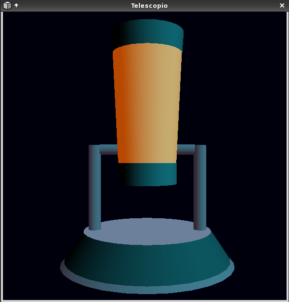
Para tener una visión más amplia de la Posición del telescopio podemos hacer doble clic en ''Virtual Telescope`` y se abre una ventana con el mismo modelo en un tamaño mas grande.
7 Realizar una Observación
Iniciar el programa Hevelius
Iniciar sesión.
Iniciar conexión a ACS. En este paso el telescopio virtual se moverá a la posición actual en la que se encuentra el telescopio real.
Ir a configuración y:
Ubicar la ciudad en la cual está el telescopio
Elegir en tipo de coordenadas en las que vamos a trabajar.
Activar o Desactivar tracking de acuerdo a lo que se desea y poner ''save`` y cerrar. Se cambiará la sección del Clima con los datos de esa ciudad.
Luego en Control ponemos la dirección que deseamos y apretamos GO y la imagen de la coordenada a observar aparecerá en la sección CCD.
(Opcional) Si queremos centrar la imagen o movernos un poco, con las flechas hacemos esto mostrandonos en offset cuanto es lo que hemos movido.
(Opcional). Si queremos ubicar una estrella conocida, podemos utilizar el catalogo de estrellas. Apretando en la que deseamos ver.
8 Agregar otros Catálogos
Para agregar un catálogo a los ya existentes, vas al directorio .hevelius/catalogues ubicado en el home de tu cuenta, donde debes ubicar el nuevo catálogo con extensión .dat, siguiendo ciertos estándares, los cuales se puede ver en los otros archivos .dat, para que le programa pueda leerlo.
9 Preguntas frecuentes
- ¿Para que sirve Hevelius?
- Hevelius sirve para la observación y estudio de cuerpos celestes.
- ¿Dónde reportar bugs?
- A una de las siguientes direcciones:
tstaig@csrg.inf.utfsm.cl
eespinoz@csrg.inf.utfsm.cl
cguajard@csrg.inf.utfsm.cl
mpilar@csrg.inf.utfsm.cl
- El programa no funciona, ¿Qué puede estar pasando?
-
No tiene acceso a internet
No posee el framework ACS
el telescopio no esta conectado correctamente o configurado
10 Referencias
- ACS: ALMA COMMON SOFTWARE
- http://www.eso.org/~almamgr/AlmaAcs
- UTFSM CSRG: UTFSM Computer Systems Research Group
- http://csrg.inf.utfsm.cl/
- ESO: European Southern Observatory
- http://www.eso.org
- HEVELIUS
- http://www.feriadesoftware.cl/2007/hevelius/
- ALMA: The Atacama Large Millimeter Array
- http://www.eso.org
11 About
| 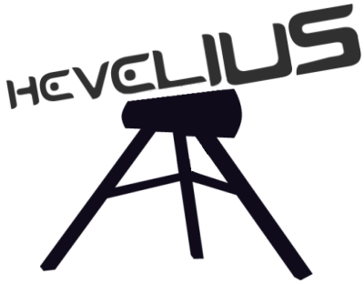 |
| Versión 1.0 |